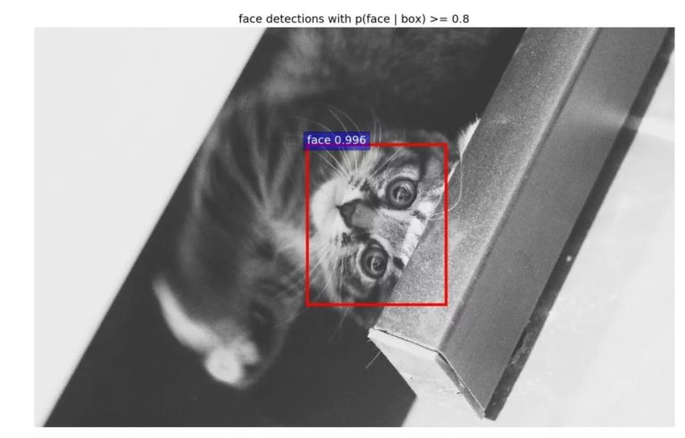
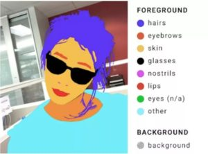
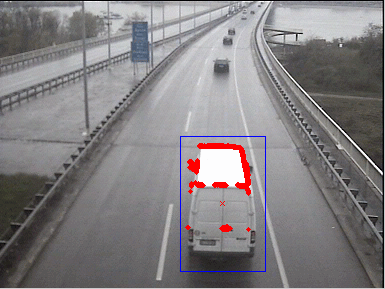
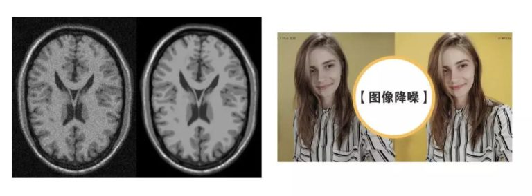
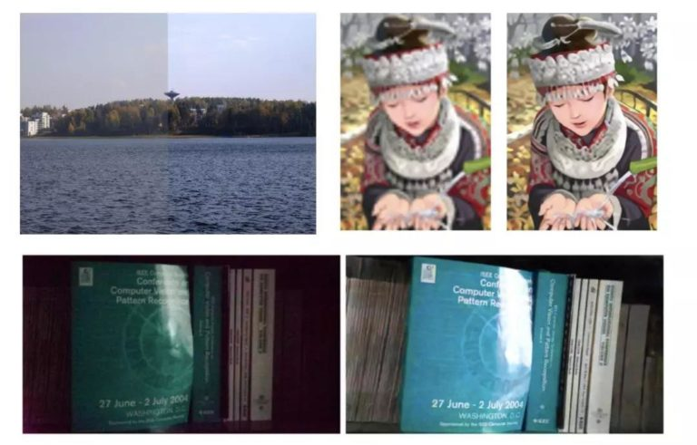
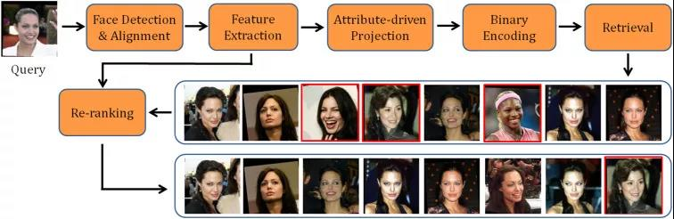
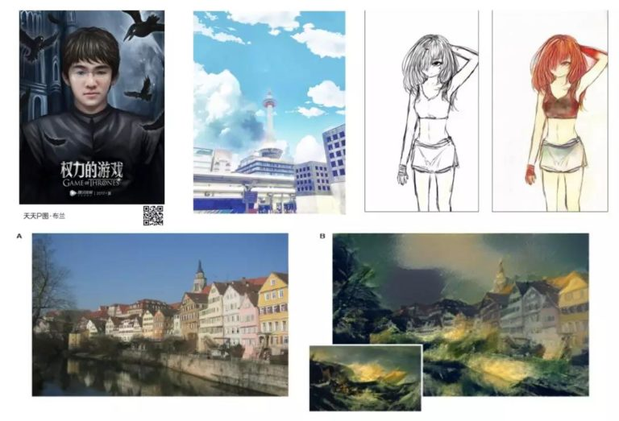
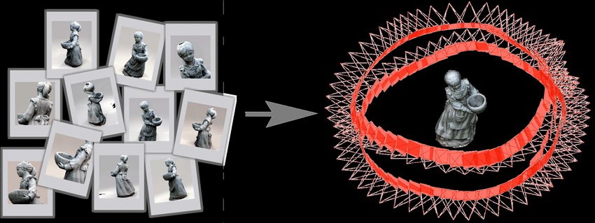

CV基本研究方向简介
CV全称Computer Vision，即计算机视觉，是人工智能里面很大、应用很广泛、工业化程度很高的一个研究领域，主要研究对象是图像和视频，本文我们简单介绍以下CV领域整体上的主要研究内容。
分类
常见的包括图片分类和视频分类，只要有数据集，不论标签是什么样的，如不同的物品，不同的情绪，不同的动作，都可以进行学习和分类。
传统机器学习方法会通过各种经典的特征算子+经典分类器组合学习，比如 HOG特征+SVM分类。现在主流的方法是深度学习的方法，CNN卷积神经网络，可以直接对图像提取特征进行分类学习，经典主流的方法包括ResNet，GoogleNet等。视频的特征提取方法有3D卷积等。
检测
目标检测任务则关注图片中特定的目标，比如定位图片中人脸的位置，五官的位置。检测任务包含两个子任务，其一是这一目标的类别信息和概率，它是一个分类任务。其二是目标的具体位置信息，这是一个定位任务。经典主流的方法包括YOLO系列和SSD系列。

与计算机视觉领域里大部分的算法一样，目标检测也经历了从传统的人工设计特征和浅层分类器的思路，到大数据时代使用深度神经网络进行特征学习的思路。
分割
图像分割就是把图像分割成具有相似的颜色或纹理特性的若干子区域，并使它们对应不同的物体或物体的不同部分的技术。这些子区域，组成图像的完备子集，又相互之间不重叠。是目前的热门方向。

常见任务包括文本图像分割，从文本图片中定位文字，车牌识别，从包含车牌的图片中定位车牌等。经典主流的方法包括R-CNN系列，FCN，SetNet等。
跟踪
检测是在图片中定位特定目标，而跟踪是在视频中持续定位特定目标。跟踪的结果通常就是一个框。是目前的热门方向。大工的卢湖川团队是国内这个领域做的最好的团队之一。

主要思路包括成式模型方法与判别式模型方法。经典方法包括单目标追踪领域的SOT，多目标追踪领域的MOT等等。
降噪
数字图像在数字化和传输过程中常受到成像设备与外部环境噪声干扰等影响，称为含噪图像或噪声图像。减少数字图像中噪声的过程称为图像降噪。

传统降噪算法根据降噪的原理不同可分为基于邻域像素特征的方法，基于频域变换的方法，和基于特定模型的方法。目前深度学习已经能达到和传统方法一样好的效果。
增强
图像增强，即增强图像中的有用信息，改善图像的视觉效果。常见细分类别包括对比度增强、超分辨率、图像修复等。

目前不同的细分领域都已经广泛采用深度学习，在特定数据集上也达到了很好的效果。
检索
即寻找与给定图片最接近的图片。检索具有很大的商业价值，目前淘宝、百度、谷歌的搜图功能都是基于检索来做的，人脸识别要快速完成也离不开检索技术。在图片特征提取完成之后，想要寻找最接近最匹配的图片，最简单的办法就是暴力搜索一遍，但是这样做时间复杂度太高了。目前做的比较好的是基于哈希的算法。

深度学习在图像检索里面的作用就是把表征样本的特征学习好，就够了。
风格迁移
常见应用就是我们用过的动漫特效，还有换脸等等，目前经典的方法是基于GAN的一些方法。

3D重建
3D重建就是建立真实物品的3D模型，可以用于游戏、电影、地图等领域。目前获取三维模型的方法主要包括三种，手工建模，仪器采集与基于图像的建模。其中基于图像的建模是CV领域的研究热门。在深度学习领域能媲美传统3D重建方法的方法还比较少。经典传统3D重建方法的集大成者是colmap.

与3D重建相关的还有一些领域，比如深度估计、Nerf。
大的研究方向主要就是这些啦，当然其实每一类都是很大的领域呢，这里我们只做总体了解，后面具体关注我们想做的。